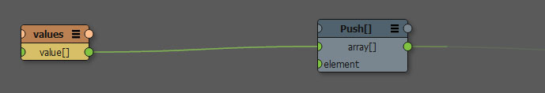
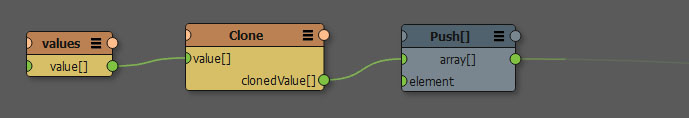

参照カウントされたデータ構造（Reference counted data structures）¶
Canvas における参照カウントされたデータ構造にまつわる問題を理解するには、２つの論点があります。
KLオブジェクト、配列、辞書は参照カウントされている
Canvas ではノード間のデータ受け渡しに複製（clone）をともなわ「ない」
単純な値や構造体 ―例えば Scalar String Vec3 ― では、コピーされるためこのことは問題となりません。しかし、参照カウントされたコンテナのコピーは、ディープコピー（deep copy）されません。つまり参照されたデータは複製されません。このため キャッシュ や 変数（Variable） や Clone ノードを使用する際に、KLオブジェクトや配列をCanvas を通じ受け渡すには、非常に注意を要します。
以下に示す例では、配列の値を元の変数に再設定しないにもかかわらず変更されてしまう例です。これは配列が参照カウントされているためです。
このグラフの挙動を当初の意図通りにするには、cloneノードを間に挟みましょう。すると、アクセスがあると配列は複製され、変数内の元の配列は変更されないままとなります。
